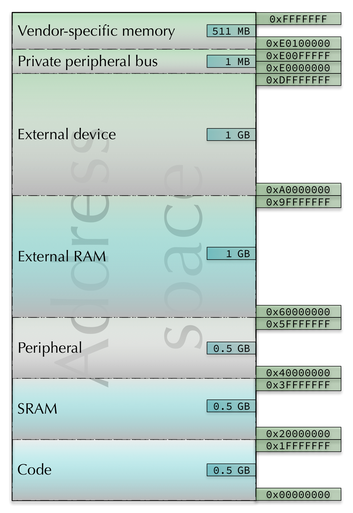
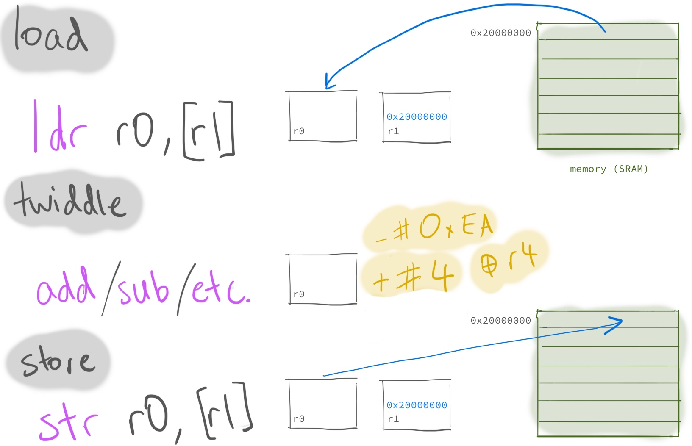
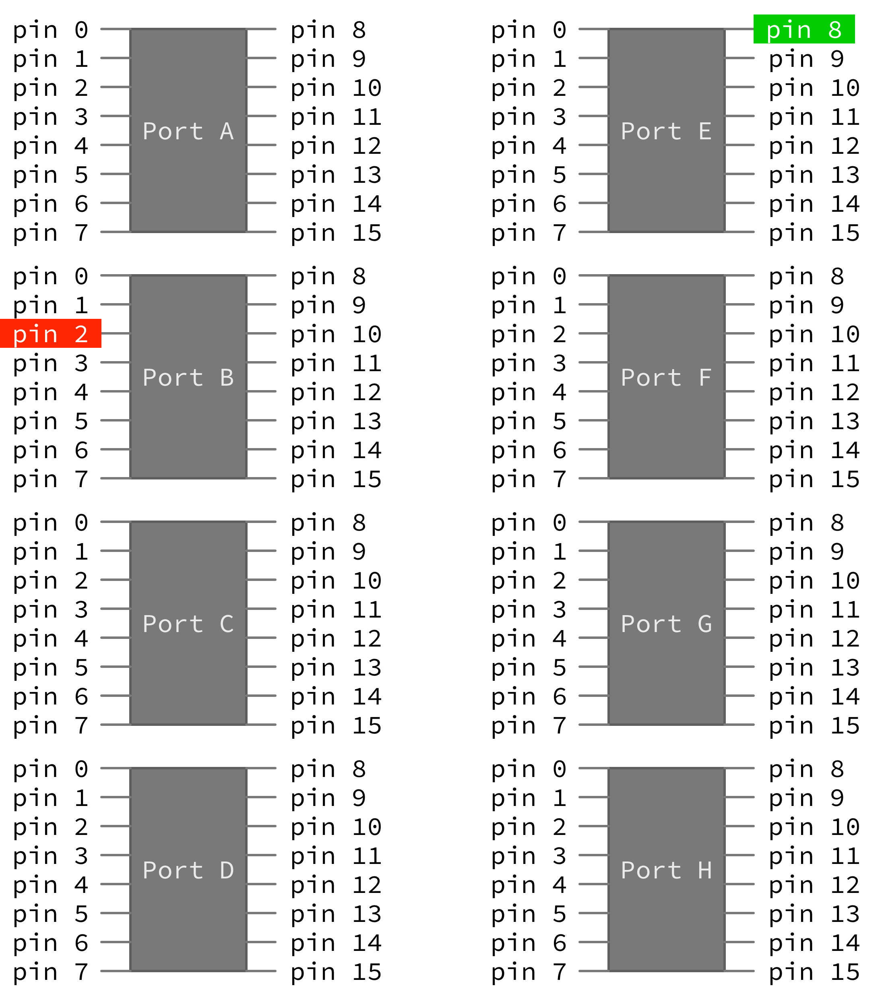
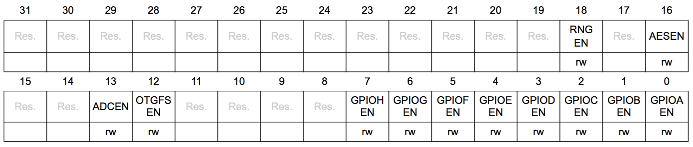
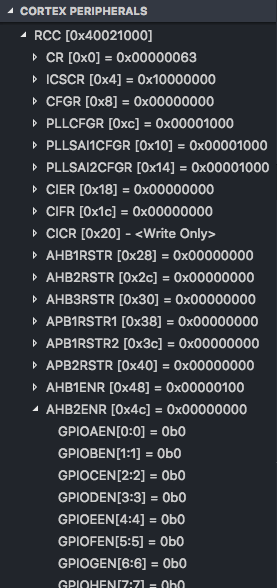
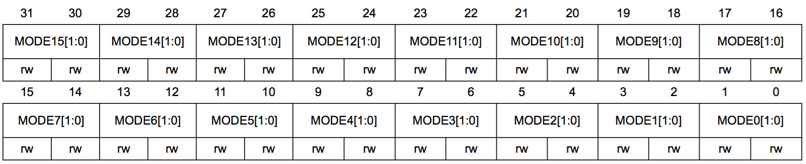
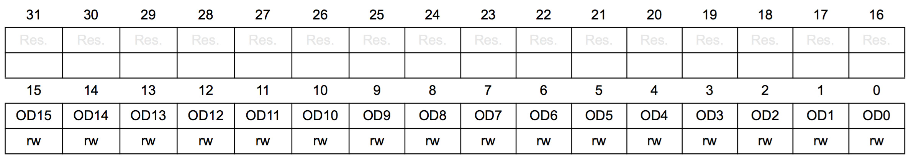

Lab 4: Blinky
Outline
Before you attend this week’s lab, make sure:
-
you can read and write basic assembly code: programs with registers, instructions, labels and branching
-
you have read the lab text below
In this week’s lab you will:
-
learn how to load and store with
ldrandstr -
blink the LEDs by reading & writing special hardware registers
-
use functions to structure your code and remove duplication
Introduction
In this week’s lab you’ll read and write some of the special hardware registers on your discoboard to see LED “output” from your program. Seeing stuff happen in the real world is a big part of the fun of microcontrollers, so this is going to be fun.
You’ll also start to see more clearly the connections between what we’ve been
covering in this course and the higher-level programming languages you’re used
to, with their if statements, for loops, and other niceties. This process of
“demystifying” programming is a big part of what this course is about, so take
the time to reflect on what you’re doing and how it fits in with what you know
and do in other programming situations.
Exercise 0: warm-up
Plug in your discoboard, fork & clone the lab 4
template to your machine, and open the src/main.S
file as usual. As discussed in the extension box at the end of the previous
lab this template contains a bit of extra startup code (in
src/startup_stm32l476xx.S) for initialising any data which you’ve put in the
.data section.
The stuff in Exercise 0 is all stuff we’ve covered already (in some cases as far back as lab 2) but it’s sometimes good to have a warm-up/refresher. Feel free to jump straight to Exercise 1 if you’re feeling adventurous, but there’s no shame in taking your time and working through the warm-up stuff—practice makes perfect!
Bit-shifting & logic ops
You will need to use some logic operations in this lab, in particular, setting
(set 1) and clearing (set 0) bits. This warm up exercise gives you a chance
to practice bit shifting and using logic operations to set and clear bits.
Edit your main.S file so that it looks like this:
main:
ldr r0, =0xcafe0000
ldr r1, =0xffff
@ your code goes here
@ when it's all done, spin in an infinite loop
loop:
nop
b loop
| Decimal | |
| Hex | |
| Binary |
Using only the instructions in the Logic and Shift/Rotate subsections of the cheat sheet (but as many registers as you need) write a program which puts all of the following values into the listed registers. Use the cheat sheet and the converter widget to help you out—draw “bit pattern” pictures on a piece of paper if it helps.
0xcafeffffintor30xcafeintor40xcaff0000intor50xc0fe0000intor6
These shouldn’t require heaps of code—just a couple of instructions for each. Remember the stuff you’ve done in previous labs.
Did you need both of the “starting” values (e.g. 0xcafe0000 and 0xffff) or
could you have got the job done with only some of them? Which ones are
essential?
Labels and loading arbitrary numbers into registers
Labels are the symbols in your source code followed by a colon
(:), e.g. main:. You’ve probably already got an intuitive feel for how they
work: you put them in your code wherever you like, and when you want to branch
to that part of the program you put the label in as the “destination” part of
the branch instruction. Here’s an example:
loop:
@ do stuff
b loop @ branch back to the "loop" label
In lab 3 you even used conditional branches to only branch under certain conditions
(i.e. if certain flags were set), and you can also turn “mathematical” conditional expressions
(e.g. x >= -45) into sequences of assembly instructions.
But what are labels, really? Add this code to your program (under the main
label):
ldr r0, =main
After you step through this line, what’s in r0? You might be wondering what
the = sign is doing in your program. Remember from lab 2 that
instructions are stored in memory with various encodings (some are 16-bit, some
are 32-bit) and that when you use an immediate value constant (e.g. 42) in
an instruction which supports it then the twos-compliment bit pattern for 42
(which is 0b101010) is stored inside that instruction.
This means that if you need to include a constant which is 32 bits long (e.g.
0xFFFFFFFF) then you can’t fit it in the instruction. You may have run into
this problem already—the error message will be something like
Error: invalid constant (0xFFFFFFFF) after fixup
and what it means is that the constant value you’re using is too big (too many bits) for the instruction you’re trying to fit it inside.
If you’re interested in exactly the ARM instruction set deals with this problem, and which constants can be stored inside a 32-bit instruction, then here’s an interesting blog post.
Because this is a bit of a pain, the assembler provides a special syntax for
storing larger values in registers. It’s based around the ldr (load register)
instruction, and if you prefix the constant with an = sign then the assembler
will generate the code1 to load the full value into the register.
For example:
mov r0, 0xFFF @ this won't work
ldr r0, =0xFFF @ this will work
So how does this relate to the ldr r0, =main instruction above? Well, the
answer is that the labels in your program are just values—they’re the
addresses (in your board’s memory space) of the instruction which occurs after
them in the program. After the linker figures out exactly which address each
label points to, it “replaces” them in the program, so that
ldr r0, =main
becomes something like
ldr r0, =0x80001c8
or whatever address the main label ends up pointing to (which will change
every time your program changes).
And since 0x80001c4 (or whatever it is) is just a bit pattern in a register,
you can do the usual arithmetic/logic stuff you can do with any values in
registers:
Write a small program which calculates the size (in memory) of the movs r3, 1
instruction and stores the result in r0.
Sections
Sections your program are directives (so they
start with a .) to the assembler that the different parts of our program
should go in different parts of the discoboard’s memory space. Some parts of
this address space are for instructions which the discoboard will execute, but
other parts contain data that your program can use.
Your program can have as many sections as you like (with whatever names you like) but there are a couple of sections which the IDE & toolchain will do useful things with by default:
-
if you use a
.textsection in your program, then anything after that (until the next section) will appear as program code for your discoboard to execute -
if you use a
.datasection, then anything after that (until the next section) will be put in RAM as memory that your program can use to read/write data your program needs to do useful things
When you create a new main.s file, any instructions you put are put in the
.text section until the the assembler sees a new section directive.
Here’s an example:
main:
ldr r0, =main
ldr r1, =storage
.data
storage:
.word 2, 3, 0, 0
.asciz "Computer Organisation & Program Execution"
Looking at the discoboard’s address space map and running the program above,
where do you think the main and storage parts of your program are ending up?
Can you find the string “Computer Organisation & Program Execution” in memory?
Try and find it in the memory view.

You can interleave the sections in your program if it makes sense:
.text
program:
@ ...
.data
storage:
@ ...
.text
more_program:
@ ...
.data
more_storage:
@ ...
When you hit build (or debug, which triggers a build) the toolchain will figure out how to put all the various bits in the right places, and you can use the labels as values in your program to make sure you’re reading and writing to the right locations.
If you’re interested in seeing how it’s done, you can look at your project’s linker script, located at
lib/bare_stm32l476/ldscripts/STM32L476VG_FLASH.ld
Exercise 1: the load-twiddle-store pattern
The load-twiddle-store pattern is a fundamental pattern in making your discoboard do useful work. The basic idea is this:
- load some data from memory into a register
- operate on (“twiddle”) the value in the register (e.g. with an
addorandinstruction) - store this new value from the register back into memory

main:
ldr r1, =storage
@ your code starts here
.data
storage:
.word 2, 3, 0, 0 @ don't change this line
Starting with the code above, use the load-twiddle-store pattern to change
the first four data words to 2 3 0 1 instead of 2 3 0 0. Hint:
first load the storage label using the = instruction, then remember that you
can load and store with an offset from this base
address (check the cheat sheet). You’ll probably also want to use the memory
browser view (like you did in week 2) to watch the values
change in memory.
Exercise 2: hello, LED!
So what does all that stuff have to do with blinking the LEDs? Well, the answer
is that there’s a section of the discoboard’s address space (0x40000000 to
0x5FFFFFFF) which is mapped to peripherals (as shown in the picture above). To
interact with the LEDs, LCD, microphone etc. on the board you need to talk to
the hardware by reading and writing to special memory locations in this memory
range. To figure out exactly which addresses are mapped to which peripherals,
you need to look at the discoboard reference
manual.
One type of peripheral is a General Purpose Input/Output pin. You can see them on your discoboard as little gold-coloured spikes sticking up out of the top and bottom of the board. Your discoboard has lots of them, and you can wire them up to other devices to make more sophisticated devices.
This exercise is pretty long, so here are the steps you’ll go through to turn on the LED:
- enable the clock for correct LED GPIO pin
- set the pin to output mode
- set a bit in the pin’s data register to turn the LED on
Don’t worry if you don’t understand some of those terms—the rest of this exercise will explain all the details.
Some of the ports on the discoboard are already connected to certain bits of hardware on the board. In the discoboard user manual Section 7.5 User interface: LCD, joystick, LEDs it says:
- LD4 user: the red LED is a user LED connected to the I/O PB2 of the STM32L476VGT6
- LD5 user: the green LED is a user LED connected to the I/O PE8 of the STM32L476VGT6
The first bullet point says that the red LED is connected to GPIO pin PB2. This means that it’s connected to pin 2 of port B. Just a note that the user manual (short) is different from the reference manual (long & detailed).
What port+pin do you think the green LED is connected to?
The GPIO pins are grouped into 8 ports (port A to port E) and each port has 16 pins (pin). It’s worth pointing out that the pin numbering starts at 0, so the first pin in port A is PA0.

From the reference manual:
Each general-purpose I/O port has four 32-bit configuration registers (GPIOx_MODER, GPIOx_OTYPER, GPIOx_OSPEEDR and GPIOx_PUPDR), two 32-bit data registers (GPIOx_IDR and GPIOx_ODR) and a 32-bit set/reset register (GPIOx_BSRR).
Don’t worry if this seems overwhelming, the main point is that each of these
ports has a few dedicated configuration registers—some are used to turn it on,
some are used to set it up, and some are used to receive data (read the voltage
on the pin as 0 or 1) or send data out (set the voltage to high or low). When it
says GPIOx, that means that there exists a version for all the ports, so the
port A version would be called GPIOA, etc.
These are not like the CPU registers you’ve been using so far (e.g. r0 or
r5). Instead, they’re mapped to certain parts of the address space (so they’re
sometimes called memory-mapped registers). Read/write access to this register
happens through load/store instructions to a specific memory address (as with
pretty much everything in a load/store architecture).
The register for turning on the clock (step 1) is in the Reset and Clock
Control (RCC) section of the address space, which on your discoboard starts at
memory address 0x40021000. The specific register which controls the clock for
GPIO ports is the RCC_AHB2ENR 32-bit register, which lives at an offset of
0x4C from the RCC base address and looks like this:

As you can see, the clock for GPIO port B (where your red LED is) is controlled through bit 1 (i.e. the second bit from the right, because the rightmost bit is bit 0). You can have a look at Section 6.4.17 of the reference manual for all the gory details.
Note that in debug view you can conveniently see this information in the Cortex Peripherals pane: 
This is your chance to see the load-twiddle-store pattern from Exercise 1 in action. To turn on GPIO port B, you must:
-
load: load the RCC base address into a register, then do an “offset”
ldrwith theRCC_AHB2ENRoffset to read the current state of theRCC_AHB2ENRregister into a CPU register -
twiddle: use bitwise operations to set the second-from-the-right
GPIOBENbit to 1 while leaving the other bits unchanged -
store: write the new
RCC_AHB2ENRvalue back to the memory address you read it from earlier
When we talk about setting a bit, that means that it should be equal to 1,
and clearing a bit means it should be equal to 0.
So what does the code to perform these load-twiddle-store steps look like?
@ load r1 with the base address of RCC
ldr r1, =0x40021000
@ load r2 with the value of RCC_AHB2ENR
@ (note the 0x4C offset from the RCC base address)
ldr r2, [r1, 0x4C]
@ set bit 1 of this register by doing a logical or with 2
@ think: why does this work?
orr r2, 2
@ store the modified result back in RCC_AHB2ENR
str r2, [r1, 0x4C]
Discuss with your lab neighbour: why is the load part of this process
necessary? Why can’t you just store a 2 into the RCC_AHB2ENR register and
be done with it?
You can paste the above code straight into your program. There are a couple more steps before you can actually turn the LED on, but they’re basically the same load-twiddle-store pattern, except with different addresses and “twiddles”.
Now it’s your turn: copy-paste a second copy of the code above as a starting
point, but you’ll need different load/store addresses and different twiddles. To
set pin 2 of GPIO port B to output mode, you need to set the MODE2 bits (4 and
5) of the GPIO mode register GPIOB_MODER, which lives at an offset of 0x0
from the GPIO base address of 0x48000400 (see Section 7.4.1 of the manual for
more info). Here’s what the GPIOB_MODER looks like:

To configure pin 2 for output mode to power the LED, you need to ensure the mode
bits for pin 2 (MODE2 in the diagram) are 01 for output mode (i.e. clear bit
5, set bit 4).
This output mode configuration for the mode register bits is sufficient for turning the LEDs on and off, but there are many more ways to configure the GPIO pins. If you’re interested, have a look in Section 7.4 of the manual.
Your PB2 pin is now configured and ready to roll. The only thing left to do is
to actually send an “on” signal to it by setting a 1 into bit 2 (for pin 2) of
the port B Output Data Register GPIOB_ODR, which lives at offset 0x14 from
the GPIOB base address and looks like this:

Following the steps above, write a program which turns on the red LED on your discoboard, and push it up to your fork on GitLab.
There are a few fiddly things which can go wrong here. If your LED isn’t coming on, talk with your neighbour about your program. Have you accidentally set the wrong bit (remember that the ports and bits are 0-indexed, so the rightmost bit is bit 0, not bit 1). Are you reading the existing register value correctly? Are you turning the bit on correctly? Are you writing it back to the right memory address? Step through the program with your partner to see what might be going wrong.
Once you can turn the red LED on, add code to turn the green one (PE8) as well.
Exercise 3: first taste of functions
You should now feel a warm glow of satisfaction—let there be light! But you’ll also notice that a few of the steps you had to go through were pretty repetitive. For every step you just did, you were really doing one of two things
- setting a specific bit at an offset from a base address, or
- clearing a specifc bit at an offset from a base address
Wouldn’t it be good if we could “factor out” the common parts of those two tasks, so that the code is simpler and clearer? We can do that with functions.
Functions
Functions are (usually resuable) blocks of code that have been designed to perform a specific task. Using functions allows us to break a big task (e.g. turning on red LED) into smaller ones (e.g. enable the peripheral clock, configure the GPIO mode, write the output data to the correct GPIO address), which in turn can be broken down into even smaller ones (e.g. setting and clearing a bit). How fine-grained you should break things down is a design choice that you get to make when you design your program.
In this exercise you’ll write some functions to help out with turning on the LEDs. The general pattern for functions look like this:
main:
@ put arguments in registers
@ mov r0, ...
bl foo @ call function foo
@ continue here after function returns
@ ...
.type foo, %function @ optional, telling compiler foo is a function
@ args:
@ r0: ...
@ result: ...
foo:
@ does something
bx lr @ return to "caller"
.size foo, .-foo @ optional, telling compiler the size of foo
You will notice that this looks very much like the label stuff we did earlier—and you’d be right. Since functions are just blocks of instructions, labels are used to mark the start of functions.
The only difference between a function and the “branch to label” code you’ve
written already in this course (with b or perhaps a conditional
branch) is that with a function we want to return back to the
caller (e.g. the main function) code; we branch with bl but we want to
“come back” when we’re done with the function instructions.
That’s why bl foo and bx lr are used in the code template above instead of
just b foo.
The bl foo instruction:
- records the address of the next instruction (i.e. the next value of
pc) in the link register, and - branches to the label (
foo)
The bx lr instruction
- branches to the memory address stored in the
lrregister
So, together these two instructions enable branching to a function (bl foo)
and branching back (bx lr) afterwards.
The .type and .size directive are optional—together they tell the compiler
that the label is a function, and what the size of the function is (.-foo
means current position minus the position of the label foo). They are
essential for the disassembly view to work correctly for the function.
set_bit_0x48000400_0x14_2:
@ code to set bit 2 of word at offset 0x14 of 0x48000400
bx lr
main:
@ ...
bl set_bit_0x48000400_0x14_2
b main
Update your red+green program by writing a few functions
using the name pattern set_bit_<base>_<offset>_<index> and
clear_bit_<base>_<offset>_<index> following the example above, so that your
main function is just a series of bl instructions (and “spins” in an
infinite loop at the end).
Arguments/parameters
You’ve now modularised your code (broken it up into smaller, re-usable parts),
but it’s still pretty repetitive. There’s a lot of repeated code between the
set_bit_xxxx functions.
The only difference between these repeated versions is the difference in inputs.
Therefore we can pass arguments to functions to parameterise those
functions, so that we just have one set_bit function that we call with
different “inputs”.
One way of getting these input values “into” the functions is to leave the
values in registers before making the bl branch. Consider the following
sum_x_y function:
main:
mov r0, 3 @ first argument, x
mov r1, 2 @ second argument, y
bl sum_x_y @ call sum_x_y(3, 2)
@ get result back in r0
.type sum_x_y, %function
@ args:
@ r0: x
@ r1: y
@ result: r0
sum_x_y:
add r0, r1
bx lr
.size sum_x_y, .-sum_x_y
The function adds the values in r0 and r1 and puts the result in r0. So
the values in r0 and r1 are arguments (or parameters—same concept,
different name). We can just leave the numbers we want to add in r0 and r1,
call the function sum_x_y, and expect the result to be in r0 after it
finishes.
Did you notice something “underhanded” going on between the caller (main) and
the callee (sum_x_y)? There is an implicit contract/agreement as to
- which registers hold the input arguments, and
- which registers hold the result
This is called calling convention, a set of rules that all function calls are expected to adhere to. It is generally CPU architecture and programming language defined. There is more to calling convention, and it will be covered in lecture and in the next lab.
Note that there are some comments before the function about where the arguments are placed. It’s a good idea to document what these registers are expected to hold for readability and clarity’s sake.
Parameterise your set_bit and clear_bit functions so that they each take
three arguments: base address, offset and bit index. Modify your main
function so that turning the LED on and off is as easy as calling your set_bit
or clear_bit functions with the right arguments.
You may have noticed that you can’t call another function while you are inside a
function, otherwise you lose the “where do I jump back to” information in lr.
So you can only make functions calls one level deep, and this can be frustrating
when you’re trying to add further structure to your code. In the week 5 lectures
we’ll learn some techniques for dealing with this problem.
Exercise 4: blinky
In this exercise you’ll add a simple loop into your program to blink one of the
LEDs on and off. You can write a delay function to do this—do it now, and
call it in-between your on and off instructions. Let the function take in an
argument so that you can specify the number of steps to “delay” for.
There are a bunch of ways to do this, but one way is to
- subtract 1 from an input register,
- if the value isn’t zero then goto step 1, else return back to the caller.
Modify your program so that after the initial setup code, there is a loop which turns the LED on, delays a little while, turns it back off, delays a little again, then branches back to the top of the loop.
Once you’ve done that, you should be able to blink the LEDs on your board to your heart’s content.
Exercise 5: FizzBlink
For the final exercise, you’ll make LED blinking more interesting by writing an
ARM assembly version of the classic
FizzBuzz childrens game (and a common
programming interview
question). The
only difference is that instead of printing "fizz" or "buzz" to the screen
(which you can’t do anyway, since we’re not running on the computer, you’re
running on the discoboard) you’ll blink the LEDS on the board. So this new
version is called FizzBlink, I guess.
Modify your program to:
- count up from
0to100in increments of1 - if the number is divisible by
3, blink the red light for some period of time (use your delay function) - if the number is divisible by
5, blink the green light for some period of time - if the number is divisible by both
3and5, blink both lights
There are several ways you could do this, but one helpful idea is to note that
the else clause is optional. You can remove the else clause so that it only
executes the code if the condition is true.
Summary
Congratulations! In this week’s lab you learned how to
-
load and store with
ldrandstr -
blink the LEDs by reading & writing special hardware registers
-
use functions to structure your code and remove duplication
Turning things on and of with a fixed delay is cool, but you can achieve more subtle effects with the LED using pulse-width modulation (PWM). The basic idea is this: if you want the LED to glow brightly, then (in a loop) leave it on for a long time, and turn it off for a short time. If you want it to glow dimly, do the opposite. Using this technique, can you make the LED look like it’s breathing? Alternately, can you store some data in your program somewhere to blink a more complex pattern—can you program your discoboard to blink in Morse Code?
-
Technically the second
ldrline (with the equals sign) compiles down to more than one instruction, but the overall effect is still to get the value0xFFFinto the registerr0. ↩